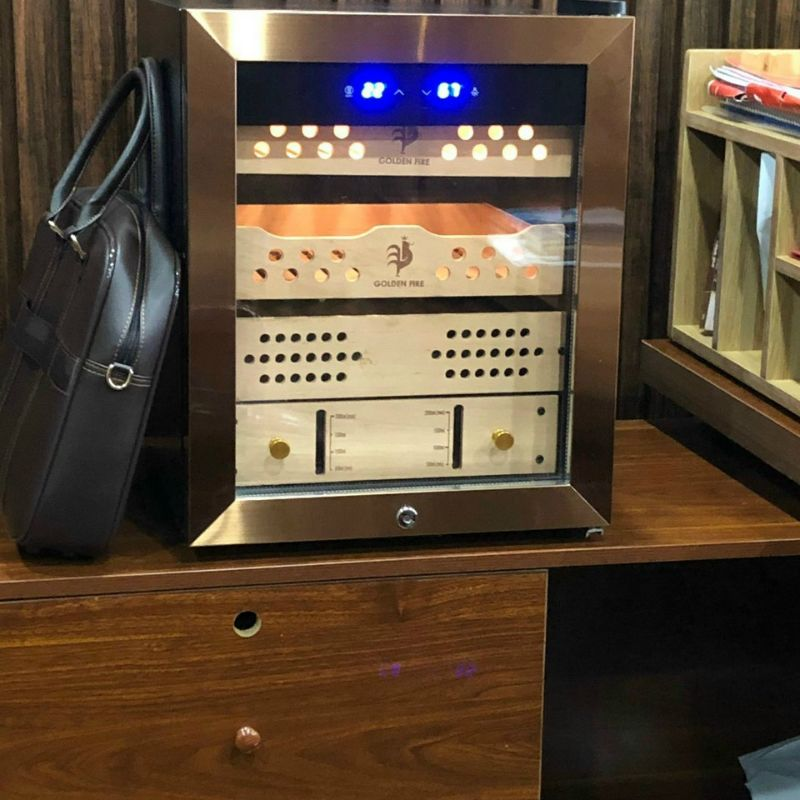
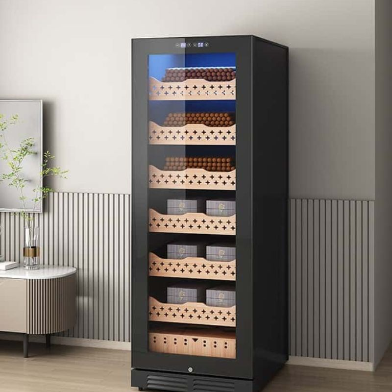
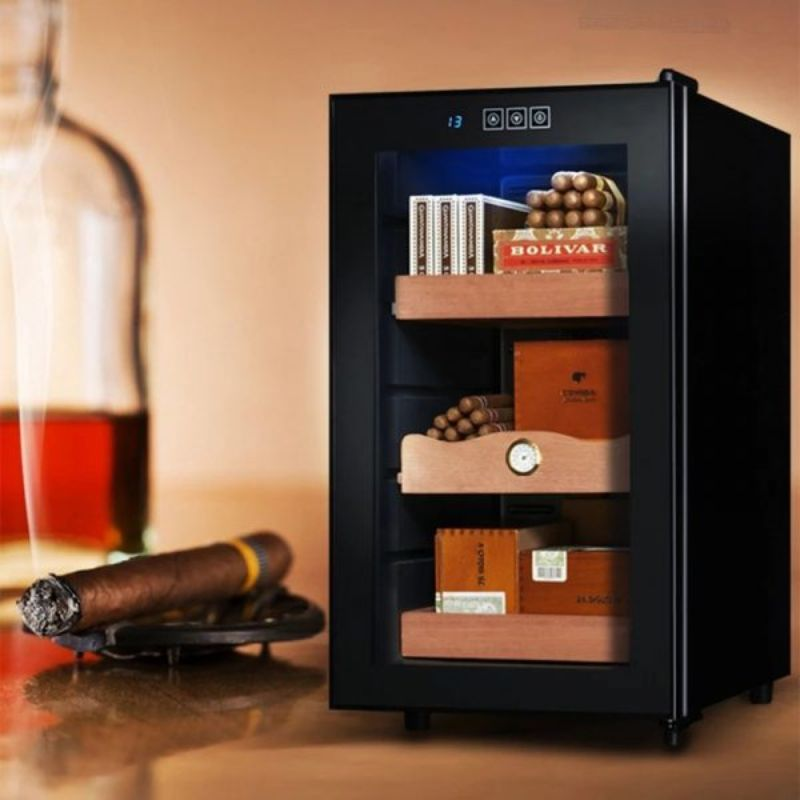
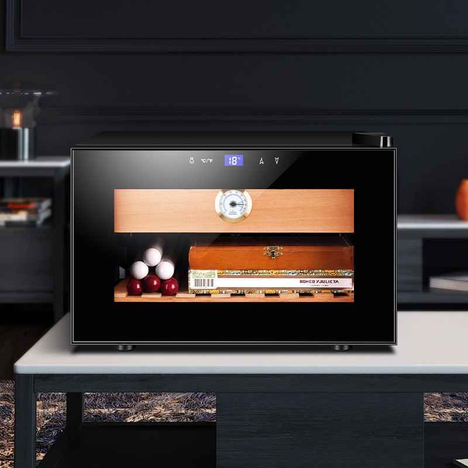

Tủ Xì Gà là gì? Cách chọn tủ bảo quản Xì Gà cho người mới
Thưởng thức xì gà đã vượt xa khỏi phạm vi một sở thích đơn thuần, trở thành một nghệ thuật tinh tế,
một biểu tượng của đẳng cấp và sự sành điệu. Nhưng để trải nghiệm trọn vẹn hương vị tuyệt hảo của
những điếu xì gà hảo hạng, việc bảo quản đúng cách là yếu tố then chốt. Và bí quyết nằm ở chính
chiếc tủ xì gà – vệ sĩ đắc lực bảo vệ hương vị và chất lượng xì gà theo thời gian.
Tủ xì gà là gì?
Tủ xì gà hay còn được biết đến với tên gọi tủ bảo quản xì gà hoặc tủ giữ ẩm xì
gà, chính là một thiết bị chuyên dụng, được thiết kế đặc biệt để tạo ra môi trường lý tưởng,
bảo quản xì gà trong điều kiện tối ưu nhất.
Điểm mấu chốt của việc bảo quản xì gà nằm ở sự kiểm soát chặt chẽ nhiệt độ và độ ẩm. Xì gà được làm
từ lá thuốc tự nhiên, rất nhạy cảm với những biến đổi của môi trường. Độ ẩm quá thấp sẽ khiến xì gà
khô, dễ gãy vụn, mất đi hương thơm tự nhiên.
Ngược lại, độ ẩm quá cao sẽ tạo điều kiện cho nấm mốc phát triển, làm hỏng xì gà. Nhiệt độ cũng đóng
vai trò quan trọng không kém. Nhiệt độ quá cao sẽ làm xì gà mất đi hương vị, còn nhiệt độ quá thấp
có thể khiến xì gà bị đóng băng, ảnh hưởng đến quá trình cháy và hương vị khi thưởng thức.
Chính vì vậy, một chiếc tủ xì gà tốt sẽ giúp duy trì độ ẩm và nhiệt độ ở mức lý tưởng, thường là độ
ẩm khoảng 65-75% và nhiệt độ khoảng 18-20 độ C. Điều này giúp ngăn ngừa xì gà bị khô, mốc, đồng thời
bảo toàn hương vị và độ tươi ngon của xì gà theo thời gian, mang đến trải nghiệm thưởng thức tuyệt
vời nhất cho người dùng.

Mẫu tủ xì gà đẹp và sang trọng
Vỏ tủ: Thường được làm bằng gỗ tuyết tùng Tây Ban Nha, một loại gỗ có khả năng giữ ẩm tuyệt vời, đồng
thời tạo nên vẻ sang trọng và đẳng cấp cho tủ xì gà. Gỗ tuyết tùng cũng có khả năng hút ẩm tự nhiên,
giúp điều hòa độ ẩm bên trong tủ, đồng thời tỏa ra hương thơm dịu nhẹ, góp phần làm tăng thêm hương
vị của xì gà.
Vỏ tủ: Thường được làm bằng gỗ tuyết tùng Tây Ban Nha, một loại gỗ có khả năng giữ ẩm
tuyệt vời, đồng thời tạo nên vẻ sang trọng và đẳng cấp cho tủ xì gà. Gỗ tuyết tùng cũng có khả
năng hút ẩm tự nhiên, giúp điều hòa độ ẩm bên trong tủ, đồng thời tỏa ra hương thơm dịu nhẹ, góp
phần làm tăng thêm hương vị của xì gà.
Hệ thống tạo ẩm: Đây là bộ phận quan trọng nhất của tủ bảo quản xì gà. Hệ thống này có
thể là máy tạo ẩm điện tử, cung cấp độ ẩm chính xác và ổn định, hoặc là khay nước, một phương
pháp tạo ẩm truyền thống. Việc lựa chọn hệ thống tạo ẩm phù hợp phụ thuộc vào nhu cầu và ngân
sách của người dùng.
Hệ thống kiểm soát nhiệt độ: Hệ thống này có thể là hệ thống điều chỉnh cơ học hoặc điện
tử, cho phép người dùng điều chỉnh và duy trì nhiệt độ bên trong tủ ở mức lý tưởng. Tủ xì gà
điện tử thường được trang bị hệ thống kiểm soát nhiệt độ điện tử, mang lại độ chính xác cao hơn.
Khay đựng xì gà: Các khay đựng xì gà được thiết kế khoa học để tối ưu không gian lưu trữ,
đồng thời giúp xì gà được sắp xếp gọn gàng, tránh va chạm và hư hỏng. Chất liệu của khay đựng
cũng rất quan trọng, thường là gỗ tuyết tùng hoặc kim loại không gỉ, đảm bảo không làm ảnh hưởng
đến chất lượng xì gà.
Với những thông tin trên, hy vọng bạn đã hiểu rõ hơn về tủ xì gà và tầm quan trọng của nó đối với
việc bảo quản xì gà. Việc lựa chọn một chiếc tủ xì gà phù hợp sẽ giúp bạn bảo vệ và nâng tầm trải
nghiệm thưởng thức xì gà của mình.
Các loại tủ xì gà phổ biến trên thị trường
Thị trường tủ xì gà hiện nay vô cùng đa dạng, với nhiều loại tủ khác nhau, từ kiểu dáng, chất liệu
đến công nghệ, đáp ứng mọi nhu cầu và ngân sách của người dùng. Việc hiểu rõ đặc điểm của từng loại
tủ bảo quản xì gà sẽ giúp bạn dễ dàng lựa chọn được sản phẩm phù hợp nhất cho bộ sưu tập xì gà của
mình.

Tủ xì gà dùng trong gia đình
Tủ xì gà gỗ
Tủ xì gà gỗ, đặc biệt là loại làm từ gỗ tuyết tùng Tây Ban Nha, luôn được giới mộ điệu xì gà
ưa chuộng bởi vẻ đẹp sang trọng, cổ điển và khả năng giữ ẩm tự nhiên tuyệt vời. Hương thơm dịu nhẹ
của gỗ tuyết tùng còn góp phần làm tăng thêm hương vị quyến rũ cho những điếu xì gà. Gỗ tuyết tùng
có khả năng hút ẩm dư thừa và nhả ẩm khi cần thiết, giúp duy trì độ ẩm ổn định bên trong tủ.
Tuy nhiên, tủ bảo quản xì gà gỗ cũng có một số hạn chế. Việc kiểm soát nhiệt độ chính xác trong tủ xì
gà gỗ khá khó khăn, phụ thuộc nhiều vào môi trường bên ngoài. Ngoài ra, tủ cigar gỗ cũng cần được
chăm sóc định kỳ, đánh bóng và bảo dưỡng để duy trì vẻ đẹp và kéo dài tuổi thọ.
Tủ bảo quản xì gà gỗ thường được phân loại theo kích thước, bao gồm tủ xì gà mini (phù hợp cho nhu
cầu cá nhân, bảo quản số lượng xì gà ít) và tủ xì gà cỡ lớn (dành cho những người sở hữu bộ sưu tập
xì gà khủng). Khi lựa chọn tủ bảo quản xì gà gỗ, bạn nên cân nhắc đến dung tích tủ, số lượng xì gà
cần bảo quản, cũng như không gian đặt tủ.
Tủ xì gà điện tử
Nếu bạn tìm kiếm sự tiện lợi và chính xác trong việc kiểm soát độ ẩm và nhiệt độ, tủ xì gà điện tử là
lựa chọn hoàn hảo. Với công nghệ hiện đại, tủ bảo quản xì gà điện tử cho phép bạn cài đặt và duy trì
độ ẩm và nhiệt độ ở mức lý tưởng một cách dễ dàng, đảm bảo môi trường bảo quản tốt nhất cho xì gà.
Mặc dù giá tủ xì gà điện tử thường cao hơn so với tủ xì gà gỗ, nhưng sự tiện lợi và khả năng kiểm
soát chính xác mà nó mang lại hoàn toàn xứng đáng với số tiền bạn bỏ ra.
Hiện nay, có hai công nghệ chính được sử dụng trong tủ xì gà điện tử:
Thermoelectric: Công nghệ này sử dụng hiệu ứng Peltier để làm mát, không gây rung lắc và
hoạt động êm ái. Tủ bảo quản xì gà thermoelectric thường có giá thành phải chăng hơn so với loại
sử dụng máy nén.
Compressor: Tủ bảo quản xì gà compressor sử dụng máy nén để làm mát, mang lại hiệu suất
làm lạnh mạnh mẽ và ổn định hơn, đặc biệt trong môi trường có nhiệt độ cao. Tuy nhiên, tủ xì gà
sử dụng công nghệ compressor thường có giá thành cao hơn và có thể gây ra tiếng ồn nhỏ khi hoạt
động.
Tủ xì gà du lịch
Đối với những người thường xuyên di chuyển, tủ xì gà du lịch là một phụ kiện không thể thiếu. Với
thiết kế nhỏ gọn, tiện lợi, bạn có thể dễ dàng mang theo tủ bảo quản xì gà mini này trong những
chuyến đi công tác hay du lịch, đảm bảo luôn có những điếu xì gà thơm ngon bên mình mọi lúc mọi nơi.
Tuy nhiên, do kích thước nhỏ gọn, dung tích lưu trữ của tủ khá hạn chế, chỉ phù hợp để bảo quản một
số lượng nhỏ xì gà.
Tóm lại, việc lựa chọn loại tủ xì gà nào phụ thuộc vào nhu cầu, ngân sách và sở thích cá nhân của
bạn. Hãy cân nhắc kỹ lưỡng các yếu tố trên để tìm được chiếc tủ bảo quản xì gà phù hợp nhất, giúp
bảo quản xì gà một cách tốt nhất và nâng cao trải nghiệm thưởng thức xì gà của bạn.
Cách chọn tủ xì gà phù hợp cho người mới chơi
Việc lựa chọn một chiếc tủ xì gà phù hợp có thể là một thử thách đối với những người mới bắt đầu. Với
vô vàn mẫu mã, kiểu dáng, kích thước và mức giá tủ xì gà khác nhau trên thị trường, làm sao để chọn
được chiếc tủ bảo quản xì gà ưng ý nhất? Đừng lo lắng, những hướng dẫn chi tiết dưới đây sẽ giúp bạn
dễ dàng đưa ra quyết định đúng đắn.

Tủ xì gà mini cho người mới
Chọn theo nhu cầu và số lượng điếu xì gà
Bước đầu tiên trong việc lựa chọn tủ bảo quản xì gà là xác định nhu cầu sử dụng và số lượng xì gà bạn
dự định bảo quản. Dung tích tủ xì gà là yếu tố quan trọng cần được cân nhắc kỹ lưỡng.
Dưới 50 điếu: Một chiếc tủ bảo quản xì gà mini sẽ là lựa chọn lý tưởng. Vừa tiết kiệm
không
gian, vừa đáp ứng tốt nhu cầu bảo quản cho bộ sưu tập nhỏ.
50-100 điếu: Tủ bảo quản xì gà cỡ trung sẽ là sự lựa chọn phù hợp, cung cấp đủ không gian
cho số
lượng xì gà vừa phải.
Trên 100 điếu: Đối với những người đam mê xì gà đích thực, sở hữu bộ sưu tập khủng, nên
đầu tư
vào một chiếc tủ bảo quản xì gà lớn hoặc tủ xì gà điện tử có nhiều tầng để đảm bảo không gian
lưu trữ thoải mái.
Xác định đúng nhu cầu và số lượng xì gà cần bảo quản sẽ giúp bạn chọn được dung tích tủ bảo quản xì
gà phù hợp, tránh lãng phí không gian hoặc thiếu chỗ lưu trữ.
Ưu tiên tủ có khả năng kiểm soát độ ẩm tốt
Độ ẩm là yếu tố then chốt trong việc bảo quản xì gà. Một chiếc tủ xì gà tốt phải có khả năng kiểm
soát độ ẩm chính xác và ổn định.
Đồng hồ đo độ ẩm: Hãy chắc chắn tủ bạn chọn được trang bị đồng hồ đo độ ẩm, giúp bạn dễ
dàng
theo dõi và điều chỉnh độ ẩm bên trong tủ.
Máy tạo ẩm: Máy tạo ẩm cho tủ bảo quản xì gà là một bộ phận quan trọng, giúp duy trì độ
ẩm tủ xì
gà ở mức lý tưởng, thường là từ 65-75%.
Gỗ tuyết tùng Tây Ban Nha: Chất liệu gỗ này được đánh giá cao về khả năng giữ ẩm tự
nhiên, giúp
điều hòa độ ẩm bên trong tủ cigar một cách hiệu quả.
Kiểm soát độ ẩm là chìa khóa để giữ cho xì gà luôn tươi ngon và thơm nồng. Đầu tư vào một tủ bảo quản
cigar có khả năng kiểm soát độ ẩm tốt là bạn đang đầu tư vào chất lượng trải nghiệm thưởng thức xì
gà của mình.
Lưu ý khi chọn chất liệu và thiết kế
Bên cạnh chức năng bảo quản, tủ bảo quản xì gà còn là một món đồ nội thất thể hiện gu thẩm mỹ của
người sở hữu.
Gỗ tự nhiên: Tủ xì gà làm từ gỗ tự nhiên, đặc biệt là gỗ tuyết tùng, không chỉ mang lại
vẻ đẹp
sang trọng mà còn giúp bảo quản cigar tốt hơn nhờ khả năng giữ ẩm và điều hòa nhiệt độ tự nhiên.
Kính cường lực, đèn LED, bản lề chống ẩm: Đây là những tính năng cần lưu ý khi chọn mua
tủ xì
gà. Kính cường lực giúp bảo vệ xì gà khỏi tác động bên ngoài, đèn LED chiếu sáng giúp bạn dễ
dàng quan sát bên trong tủ, bản lề chống ẩm giúp kéo dài tuổi thọ của tủ.
Thiết kế sang trọng: Hãy lựa chọn tủ cigar có thiết kế phù hợp với không gian nội thất
của bạn,
tạo điểm nhấn sang trọng và tinh tế.
Một chiếc tủ cigar không chỉ là nơi bảo quản xì gà mà còn là một món đồ nội thất thể hiện gu thẩm mỹ
của bạn. Hãy lựa chọn chất liệu và thiết kế phù hợp để tạo điểm nhấn sang trọng cho không gian.
Cân nhắc về giá tủ xì gà
Giá tủ xì gà trên thị trường rất đa dạng, phụ thuộc vào nhiều yếu tố như kích thước, chất liệu,
thương hiệu và công nghệ.
Tủ cigar mini: Thường có giá từ 1-3 triệu đồng.
Tủ cigar điện tử cỡ trung: Giá dao động từ 5-10 triệu đồng.
Tủ cigar cao cấp: Có thể lên đến 15-30 triệu đồng hoặc cao hơn, tùy thuộc vào thương
hiệu, chất
liệu và công nghệ đi kèm.
Hy vọng những chia sẻ trên sẽ giúp bạn tìm được chiếc tủ bảo quản xì gà ưng ý, hoàn thiện trải nghiệm
thưởng thức xì gà của mình.
Bí kíp bảo quản xì gà trong tủ vẫn giữ vẹn hương vị xì gà
Đầu tư một chiếc tủ xì gà chất lượng là bước đầu tiên, nhưng để bảo quản xì gà đúng cách, giữ trọn
hương vị và độ tươi ngon, bạn cần nắm vững những bí quyết sau. Việc bảo quản đúng cách trong tủ giữ
ẩm xì gà sẽ giúp xì gà luôn ở trạng thái hoàn hảo, sẵn sàng cho những trải nghiệm thưởng thức tuyệt
vời.

Tủ xì gà cao cấp cho quý ông
Kiểm soát độ ẩm
Độ ẩm là yếu tố then chốt ảnh hưởng đến chất lượng xì gà. Độ ẩm lý tưởng trong tủ bảo quản xì gà là
65-75%. Quá thấp, xì gà sẽ khô, dễ gãy; quá cao, nấm mốc sẽ phát triển. Sử dụng máy tạo ẩm cho tủ xì
gà và thường xuyên kiểm tra độ ẩm tủ xì gà bằng ẩm kế. Duy trì độ ẩm ổn định giúp xì gà luôn thơm
ngon, tránh hư hại.
Kiểm soát nhiệt độ
Nhiệt độ lý tưởng để bảo quản cigar là 18-20 độ C. Nhiệt độ quá cao hoặc quá thấp đều ảnh hưởng đến
hương vị xì gà. Hầu hết tủ xì gà hiện đại đều có hệ thống kiểm soát nhiệt độ, giúp bạn dễ dàng điều
chỉnh. Nhiệt độ ổn định bảo vệ cấu trúc và hương vị xì gà.
Sắp xếp xì gà
Tránh xếp xì gà quá chặt trong tủ giữ ẩm xì gà. Đảm bảo không gian lưu thông không khí để ngăn ngừa
nấm mốc và phân bổ độ ẩm đều. Sắp xếp hợp lý giúp tối ưu không gian và duy trì chất lượng xì gà.
Vệ sinh tủ xì gà
Vệ sinh tủ xì gà định kỳ (1-2 tháng/lần) bằng khăn ẩm và dung dịch vệ sinh chuyên dụng. Đảm bảo tủ
khô ráo trước khi đặt xì gà vào. Vệ sinh thường xuyên giúp ngăn ngừa nấm mốc, vi khuẩn, giữ xì gà
tươi ngon.
Tủ cigar là khoản đầu tư xứng đáng cho người yêu xì gà. Hiểu rõ về tủ xì gà và cách bảo
quản sẽ giúp
bạn tận hưởng trọn vẹn hương vị xì gà hảo hạng. Ghé thăm Flexhouse VN để khám phá các sản phẩm tủ xì
gà chất lượng, từ tủ xì gà mini đến tủ xì gà điện tử hiện đại, cùng phụ kiện xì gà cao cấp, nâng tầm
trải nghiệm của bạn.